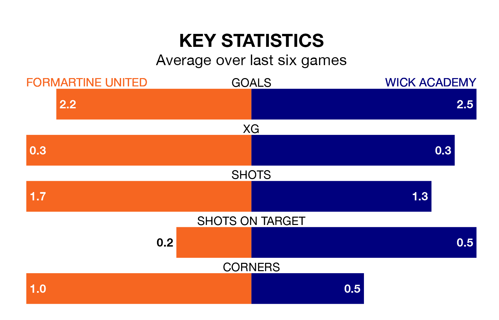

Wick Academy travel to Formartine United on late Wednesday in the Highland Football League.
The visitors come into the game on the back of a defeat in their last match, having lost to Brechin City 2-1 at home.
Formartine, meanwhile, won their last match, 2-0 against Nairn County.
With 74 goals in 30 games so far this season, Formartine are scoring more than average in the league with 2.5 goals per game. And they are conceding fewer than average, letting in 40 goals at a rate of 1.3 per game.
Wick Academy, meanwhile, are below average scorers, with 1.4 goals per game, compared to a league average of 1.8. They have conceded 2.2 goals per game.
In the last 10 years, Formartine and Wick Academy have played each other on 13 occasions. Formartine won seven of them, Wick Academy five, and they drew once.
On average, Formartine scored 1.8 goals and Wick Academy 1.4 in those matches.
Their last meeting was on March 2, when Wick Academy won 3-1 at home.
United are fifth in the table after 30 games, of which they have won 19 and drawn five, earning 62 points.
The visitors are eight places behind the home side in 13th, with eight wins and five draws putting them on 29 points.
Formartine are in reasonable form in the Highland Football League, with four wins and two losses from their last six games.
With three wins and three losses over that period, Wick Academy's form is worse – they have taken nine points from 18, compared to Formartine's 12.
Updated: 14:47 (UTC), 09/04/24